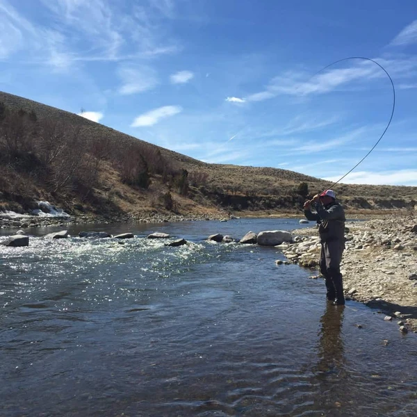
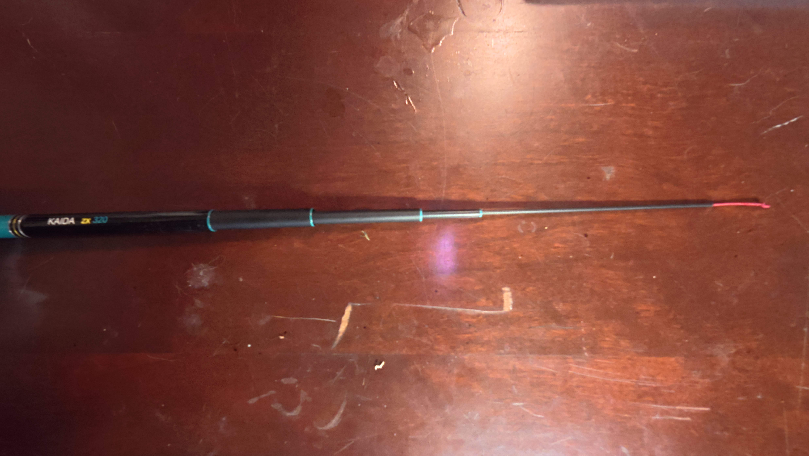
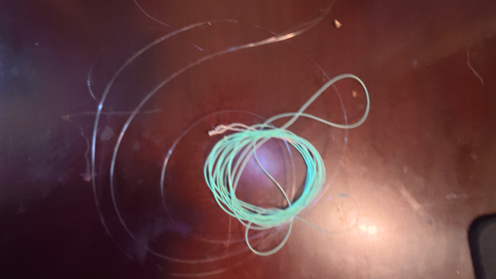
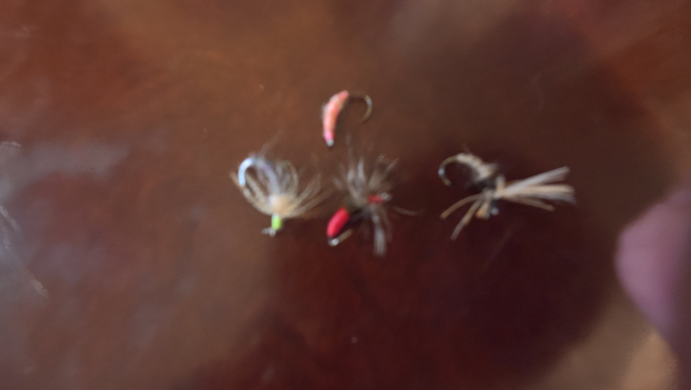
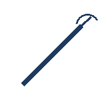
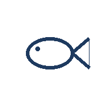

Introduction to Tenkara Fishing
A Simple Guide to Minimalist Fly Fishing

Just a rod, a line, and a fly.
What Is Tenkara?
Tenkara is a traditional Japanese style of fly fishing that uses a long telescoping rod, a fixed line, and a fly. Unlike most fly-fishing equipment, a tenkara rod does not use a reel.
Basic Gear
A simple setup starts with these three pieces of equipment, plus a thin section of tippet connecting the line to the fly.
The Rod

A long, telescoping rod, often around 10 to 13 feet. The line attaches to the rod tip, so there is no reel.
The Line

A fixed length of level or furled line carries the fly during the cast. A thin section of tippet connects it to the fly.
The Fly

Traditional tenkara flies are called kebari. They imitate insects and are presented in the water to attract fish.
Tenkara at a Glance
Six simple parts of the tenkara experience.

Rod
Line
Fly

Fish
Streams
Net